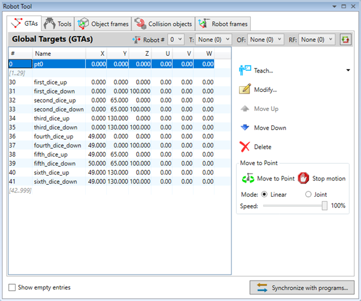
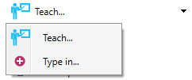
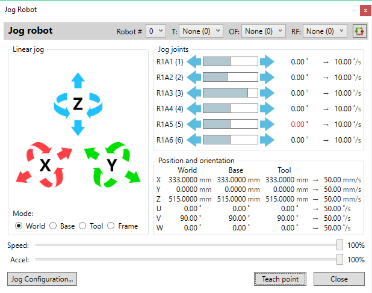
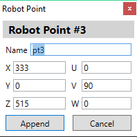
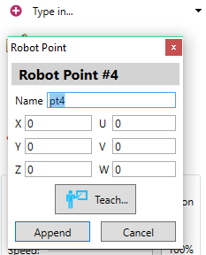
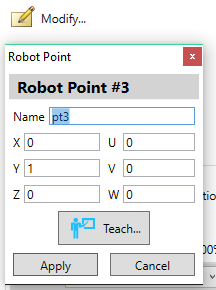
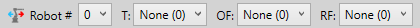

In association with robot related development, a new TARGET data type has been introduced in the Trio BASIC language. It stores information of position and orientation in 3D space. The TARGET data type represents a set of 6 values:
- X, Y, Z – for the coordinates of the point in 3D space in millimeters
- U, V, W – for the angular orientation in degrees.
An array of 1000 global target ( GTA ) points is available for use in all programs. In addition to the 6 coordinates GTAs can have name assigned which can be used to reference them in programs. An Active state flag used to determine whether GTA point has already been defined and contains valid data.
The Robot tool displays a list of already defined points.

The ranges of empty entries can be collapsed to single line which allows for more compact representation.
To expand the empty ranges use ‘Show empty entries’ check-box.
There are two methods for entering new points – teaching and typing-in.

This method makes use of robot jog tool to interactively adjust the robot position and orientation before acquired point to be stored.

Once the operator has finished adjusting the robot to the target position it can be added to the list by pressing ‘Teach point’ button.
A dialog box is displayed allowing the operator to set the name for the new GTA point and also to do any corrections to the coordinates if necessary. The name should be different from the existing ones otherwise the tool will refuse to add the new point.

Pressing the ‘Append’ button adds the new point to the list.
Jog will not close automatically after appending the point, allowing the operator to add multiple target points in a single teach session. The software will automatically select the next empty position in the list.
In this mode the operator directly enters the name and the coordinates of the target point.

The user interface is similar to the final stage in the teaching case. The coordinates can be entered manually or populated by pressing the ‘Teach…’ button which will open robot jog tool.
Pressing ‘Append’ button will store the newly entered data in the currently selected entry and software will move the selection to the next empty entry.
By pressing
 button a mode similar to the operation of ‘Type-in’ mode is
invoked. It allows the operator to modify coordinates or the name of previously
defined point or alternatively populate a new entry.
button a mode similar to the operation of ‘Type-in’ mode is
invoked. It allows the operator to modify coordinates or the name of previously
defined point or alternatively populate a new entry.

After pressing ‘Apply’ button the modifications are accepted and dialogue box is closed allowing only the modification of a single entry at a time.
By pressing
 and
buttons
currently selected points can be moved up or down on position in the list. When
empty entries are collapsed the selected points are moved over the entire
range.
and
buttons
currently selected points can be moved up or down on position in the list. When
empty entries are collapsed the selected points are moved over the entire
range.
By pressing
 button the data stored in selected points will be deleted and they
will become empty.
button the data stored in selected points will be deleted and they
will become empty.
The user interface in that section allows the operator to move the robot to the currently selected GTA point.
By pressing button the movement is started.
It can be prematurely stopped by pressing button.
The robot can be moved in two modes:
- linear – done by executing MOVEL command in which case the motion of all joints is synchronized in order to produce linear movement of the end effector of the robot
- joint – done by executing MOVEJ command in which case the each joint moves with constant speed between its start and end position. In that mode the end effector is not guaranteed to move linearly between its start and end position.
The speed of the movement can be adjusted to be a fraction of the nominal speed provided as part of the robot definition.
In case of multi-robot configuration it is possible to select the active robot which will be moved to the selected target position.
It is also possible to select active tool, object frame and robot frame against which the movement will be applied.
These selections can be done using the controls in right side of the title bar.
